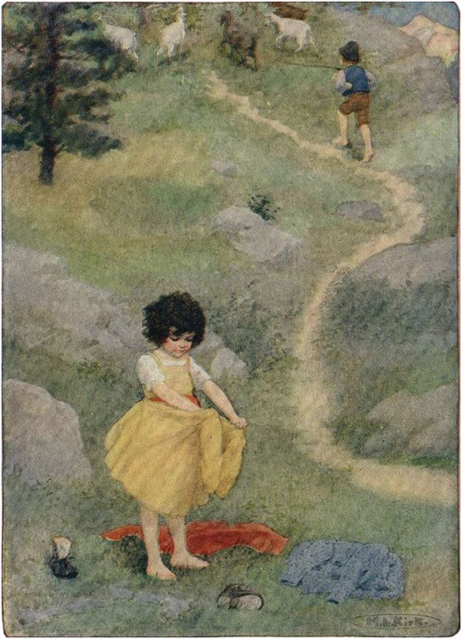

Kota kecil Mayenfeld yang tua dan indah terletak di lokasi yang menawan. Dari kota ini, jalan setapak mengarah melalui hamparan hijau yang rimbun menuju kaki bukit yang menjulang megah di atas lembah. Di tempat jalan setapak mulai menanjak curam dan tiba-tiba ke Pegunungan Alpen, padang rumput dengan rerumputan pendek dan aroma tumbuhan yang kuat segera menebarkan wangi lembutnya untuk menyambut pejalan kaki.
Suatu pagi yang cerah di bulan Juni, seorang gadis tinggi dan tegap dari daerah pegunungan mendaki jalan setapak yang sempit, sambil menggandeng tangan seorang gadis kecil. Pipi gadis kecil itu begitu merona sehingga terlihat jelas meskipun kulitnya sudah kecoklatan karena matahari. Tak heran! Karena meskipun panas, gadis kecil yang baru berusia lima tahun itu mengenakan pakaian tebal seolah-olah harus menghadapi embun beku yang menusuk tulang. Bentuk tubuhnya sulit dikenali, karena ia mengenakan dua gaun, atau bahkan tiga, dan selendang katun merah besar di bahunya. Dengan kakinya yang terbungkus sepatu bot berat berpaku, sosok kecil yang kepanasan dan tak berbentuk ini bersusah payah mendaki gunung.
Pasangan itu telah mendaki selama sekitar satu jam ketika mereka mencapai sebuah dusun di tengah perjalanan mendaki gunung besar yang bernama Alm. Dusun ini disebut " Im" " Dörfli " atau "Desa Kecil." Itu adalah kampung halaman gadis yang lebih tua, dan karena itu dia disambut dari hampir setiap rumah; orang-orang memanggilnya dari jendela dan pintu, dan sangat sering dari jalan. Tetapi, menjawab pertanyaan dan panggilan saat dia lewat, gadis itu tidak berlama-lama di jalannya dan hanya berhenti ketika dia mencapai ujung dusun. Di sana beberapa pondok tersebar, dari pondok terjauh terdengar suara memanggilnya melalui pintu yang terbuka: "Deta, tunggu sebentar! Aku akan ikut denganmu, jika kamu akan pergi lebih jauh."
Ketika gadis itu berdiri diam menunggu, anak itu langsung melepaskan tangannya dan segera duduk di tanah.
"Apakah kamu lelah, Heidi?" tanya Deta kepada anak itu.
"Tidak, tapi panas," jawabnya.
"Kita akan sampai di atas dalam satu jam, jika kamu melangkah dengan cepat dan mendaki dengan sekuat tenaga!" Demikianlah gadis yang lebih tua mencoba menyemangati temannya yang masih kecil.
Seorang wanita bertubuh gemuk dan berpenampilan menarik keluar dari rumah dan bergabung dengan keduanya. Anak itu telah bangun dan berjalan di belakang kenalan lama tersebut, yang segera mulai bergosip tentang teman-teman mereka di lingkungan sekitar dan orang-orang di dusun itu secara umum.
"Kau mau membawa anak itu ke mana, Deta?" tanya pendatang baru itu. "Apakah dia anak yang ditinggalkan kakakmu?"
"Ya," Deta meyakinkannya; "Aku akan membawanya ke Alm-Uncle dan aku ingin dia tinggal di sana."
"Kau tidak mungkin benar-benar bermaksud membawanya ke sana, Deta. Kau pasti sudah kehilangan akal sehatmu, sampai-sampai pergi menemuinya. Aku yakin orang tua itu akan mengusirmu dan bahkan tidak akan mendengarkan apa yang kau katakan."
"Kenapa tidak? Karena dia kakeknya, sudah saatnya dia melakukan sesuatu untuk anak itu. Aku telah merawatnya sampai musim panas ini dan sekarang tempat yang baik telah ditawarkan kepadaku. Anak itu tidak akan menghalangiku untuk menerimanya, aku jamin itu!"
"Tidak akan sesulit ini, jika dia seperti manusia biasa. Tapi kau sendiri mengenalnya. Bagaimana mungkin dia bisa mengasuh seorang anak, apalagi yang masih sangat kecil? Dia tidak akan pernah akur dengannya , aku yakin itu!— Tapi ceritakan padaku tentang prospekmu."
"Aku akan pergi ke sebuah rumah mewah di Frankfurt. Musim panas lalu beberapa orang pergi ke pemandian air panas dan aku menjaga kamar mereka. Karena mereka mulai menyukaiku, mereka ingin mengajakku ikut, tetapi aku tidak bisa pergi. Mereka sudah kembali sekarang dan membujukku untuk ikut bersama mereka."
"Syukurlah aku bukan anak kecil itu!" seru Barbara sambil bergidik. "Tidak ada yang tahu apa pun tentang kehidupan lelaki tua itu di atas sana. Dia tidak berbicara dengan siapa pun, dan dari akhir tahun ke tahun berikutnya dia menjauhi gereja. Orang-orang menyingkir dari jalannya ketika dia muncul sekali dalam dua belas bulan di sini di antara kita. Kita semua takut padanya dan dia benar-benar seperti orang kafir atau orang Indian tua, dengan alis abu-abu tebal dan janggut besar yang aneh itu. Ketika dia berkeliaran di jalan dengan tongkat bengkoknya , kita semua takut bertemu dengannya sendirian."
"Itu bukan salahku," kata Deta dengan keras kepala. "Dia tidak akan menyakitinya; dan jika dia melakukannya, dialah yang bertanggung jawab, bukan aku."
"Aku berharap aku tahu apa yang membebani hati nurani lelaki tua itu. Mengapa matanya begitu tajam dan mengapa dia tinggal sendirian di sana? Tidak ada yang pernah melihatnya dan kami mendengar banyak hal aneh tentangnya. Apakah kakakmu tidak memberitahumu apa pun, Deta?"
"Tentu saja dia melakukannya, tapi aku akan diam saja . Dia akan membuatku menanggung akibatnya jika aku tidak diam."
Barbara sudah lama ingin tahu sesuatu tentang paman tua itu dan mengapa dia tinggal terpisah dari semua orang. Tidak ada yang mengatakan hal baik tentangnya, dan ketika orang-orang membicarakannya, mereka tidak berbicara secara terbuka tetapi seolah-olah mereka takut. Dia bahkan tidak bisa menjelaskan pada dirinya sendiri mengapa dia disebut Paman Alm. Dia tidak mungkin menjadi paman semua orang di desa, tetapi karena semua orang membicarakannya seperti itu, dia pun melakukan hal yang sama. Barbara, yang baru tinggal di desa itu sejak menikah, senang mendapatkan beberapa informasi dari temannya. Deta dibesarkan di sana, tetapi sejak kematian ibunya, dia pergi untuk mencari nafkah.
Ia dengan penuh rahasia meraih lengan Deta dan berkata: "Aku harap kau mau mengatakan yang sebenarnya tentang dia, Deta; kau tahu semuanya—orang-orang hanya bergosip. Katakan padaku, apa yang terjadi pada lelaki tua itu sehingga semua orang menentangnya? Apakah dia selalu membenci sesamanya?"
"Aku tidak bisa memberitahumu apakah dia selalu begitu, dan itu karena alasan yang sangat bagus. Karena dia sudah enam puluh tahun, dan aku baru dua puluh enam tahun, kau tidak bisa mengharapkan aku untuk menceritakan masa mudanya. Tapi jika kau berjanji untuk merahasiakannya dan tidak membuat semua orang di Prätiggan membicarakannya, aku bisa menceritakan banyak hal. Ibuku dan dia sama-sama berasal dari Domleschg ."
"Bagaimana bisa kau bicara seperti itu, Deta?" jawab Barbara dengan nada tersinggung. "Orang-orang tidak banyak bergosip di Prätiggan , dan aku selalu bisa menyimpan semuanya untuk diriku sendiri jika perlu. Kau tidak akan menyesal telah menceritakannya padaku, aku jamin!"
"Baiklah, tapi tepati janjimu!" kata Deta memperingatkan. Kemudian dia melihat sekeliling untuk memastikan anak itu tidak terlalu dekat sehingga tidak bisa mendengar apa yang mungkin mereka bicarakan; tetapi gadis kecil itu tidak terlihat di mana pun. Sementara kedua wanita muda itu berbicara begitu cepat, mereka tidak menyadari ketidakhadirannya; cukup lama pasti telah berlalu sejak gadis kecil itu berhenti mengikuti teman -temannya. Deta, berdiri diam, melihat ke sekelilingnya, tetapi tidak ada seorang pun di jalan setapak, yang—kecuali beberapa tikungan—terlihat hingga ke desa.
"Itu dia! Tidakkah kau lihat dia di sana?" seru Barbara, sambil menunjuk ke suatu tempat yang agak jauh dari jalan setapak. "Dia sedang mendaki bersama penggembala kambing Peter dan kambing-kambingnya. Aku heran kenapa dia terlambat sekali hari ini. Harus kuakui, itu cukup cocok untuk kita; dia bisa menjaga anak sementara kau menceritakan semuanya tanpa terganggu."
"Akan sangat mudah bagi Peter untuk mengawasinya," ujar Deta; "dia cerdas untuk usianya yang lima tahun dan matanya selalu terbuka lebar. Aku sering memperhatikan hal itu dan aku senang untuknya, karena itu akan berguna bagi pamannya. Dia tidak punya apa-apa lagi di seluruh dunia ini, kecuali pondoknya dan dua ekor kambing!"
"Apakah dulu dia punya lebih banyak?" tanya Barbara.
"Tentu saja. Dia adalah pewaris sebuah pertanian besar di Domleschg . Tetapi karena ingin berperan sebagai bangsawan, dia segera kehilangan segalanya karena minuman keras dan kesenangan. Orang tuanya meninggal karena duka cita dan dia sendiri menghilang dari daerah ini. Setelah bertahun-tahun, dia kembali dengan seorang anak laki-laki yang sudah setengah dewasa, putranya, Tobias, itulah namanya, menjadi seorang tukang kayu dan ternyata menjadi orang yang pendiam dan teguh. Banyak desas-desus aneh beredar tentang paman itu dan saya pikir itulah sebabnya dia meninggalkan Domleschg untuk Dörfli . Kami mengakui hubungan kekerabatan, nenek dari pihak ibu saya adalah sepupunya. Kami memanggilnya paman, dan karena kami memiliki hubungan kekerabatan dari pihak ayah dengan hampir semua orang di dusun itu, mereka semua juga memanggilnya paman. Dia dijuluki 'Paman Alm' ketika dia pindah ke Alm."
"Tapi apa yang terjadi pada Tobias?" tanya Barbara dengan penuh harap.
"Tunggu dulu. Bagaimana aku bisa menceritakan semuanya sekaligus?" seru Deta. "Tobias adalah seorang pekerja magang di Mels , dan ketika ia menjadi master, ia pulang ke desa dan menikahi saudara perempuanku, Adelheid. Mereka selalu saling menyayangi dan hidup bahagia sebagai suami istri. Tetapi kebahagiaan mereka singkat. Dua tahun kemudian, ketika Tobias membantu membangun rumah, sebuah balok jatuh menimpanya dan membunuhnya. Adelheid terserang demam hebat karena kesedihan dan ketakutan, dan tidak pernah pulih darinya. Ia tidak pernah kuat dan sering menderita serangan aneh, di mana kami tidak tahu apakah ia terjaga atau tertidur. Hanya beberapa minggu setelah kematian Tobias, mereka menguburkan Adelheid yang malang."
"Orang-orang mengatakan bahwa surga telah menghukum paman itu atas perbuatan jahatnya. Setelah kematian putranya, dia tidak pernah berbicara dengan siapa pun. Tiba-tiba dia pindah ke Alpen, untuk tinggal di sana dalam permusuhan dengan Tuhan dan manusia."
"Ibu saya dan saya membawa bayi kecil Adelheid yang berusia satu tahun, Heidi, untuk tinggal bersama kami. Ketika saya pergi ke Ragatz, saya membawanya serta; tetapi pada musim semi, keluarga yang pekerjaan saya lakukan tahun lalu datang dari Frankfurt dan memutuskan untuk membawa saya ke rumah mereka. Saya sangat senang mendapatkan posisi yang begitu baik."
"Dan sekarang kau ingin menyerahkan anak itu kepada lelaki tua yang mengerikan ini. Aku benar-benar heran bagaimana kau bisa melakukan itu, Deta!" kata Barbara dengan nada mencela.
"Sepertinya aku sudah cukup berbuat untuk anak ini. Aku tidak tahu harus membawanya ke mana lagi, karena dia masih terlalu kecil untuk ikut denganku ke Frankfurt. Ngomong-ngomong, Barbara, kamu mau pergi ke mana? Kita sudah setengah jalan mendaki Alm."
Deta berjabat tangan dengan temannya dan berdiri diam sementara Barbara mendekati gubuk gunung kecil berwarna cokelat gelap, yang terletak di sebuah lembah beberapa langkah dari jalan setapak.
Terletak di tengah lereng Alm, pondok itu untungnya terlindungi dari angin kencang. Seandainya terkena badai, pondok itu pasti tidak layak huni mengingat kondisinya yang sudah lapuk. Bahkan dalam kondisi seperti itu pun, pintu dan jendela berderak dan balok-balok atap tua bergoyang ketika angin selatan menerpa lereng gunung. Jika pondok itu berdiri di puncak Alm, angin pasti akan menerbangkannya ke lembah tanpa banyak kesulitan saat musim badai tiba.
Di sinilah hidup Peter si penggembala kambing, seorang anak laki-laki berusia sebelas tahun, yang setiap hari mengambil kambing-kambing dari desa dan menggiringnya ke atas gunung menuju padang rumput yang pendek dan subur . Peter berlari menuruni gunung di malam hari bersama kambing-kambing kecil yang lincah. Ketika ia bersiul tajam melalui jari-jarinya, setiap pemilik akan datang dan mengambil kambing mereka. Para pemilik ini sebagian besar adalah anak laki-laki dan perempuan kecil dan, karena kambing-kambing itu ramah, mereka tidak takut pada kambing-kambing tersebut. Itulah satu-satunya waktu Peter menghabiskan waktu bersama anak-anak lain, sepanjang hari hewan-hewan itu adalah satu-satunya temannya. Di rumah tinggal ibunya dan seorang nenek tua yang buta, tetapi ia hanya menghabiskan cukup waktu di gubuk untuk menelan roti dan susu untuk sarapan dan makanan yang sama untuk makan malam. Setelah itu ia mencari tempat tidurnya untuk tidur. Ia selalu berangkat pagi-pagi sekali dan pulang larut malam, agar bisa bersama teman-temannya selama mungkin. Ayahnya pernah mengalami kecelakaan beberapa tahun yang lalu; ia juga bernama Peter si penggembala kambing. Ibunya, yang bernama Brigida, dipanggil "istri Peter si Penggembala Kambing" dan neneknya yang buta dipanggil "nenek" oleh orang tua dan muda dari berbagai tempat.
Deta menunggu sekitar sepuluh menit untuk melihat apakah anak-anak itu datang dari belakang bersama kambing-kambing mereka. Karena dia tidak dapat menemukan mereka di mana pun, dia naik sedikit lebih tinggi untuk mendapatkan pemandangan yang lebih baik ke bawah lembah dari sana, dan mengintip ke kiri dan ke kanan dengan raut wajah yang sangat tidak sabar.
Sementara itu, anak-anak itu mendaki perlahan dengan cara zig-zag, Peter selalu tahu di mana menemukan berbagai tempat penggembalaan yang baik untuk kambing-kambingnya agar mereka bisa merumput. Dengan demikian mereka berjalan ke sana kemari. Gadis kecil yang malang itu hanya mengikuti anak laki-laki itu dengan susah payah dan ia terengah-engah dalam pakaiannya yang berat. Ia merasa sangat panas dan tidak nyaman sehingga ia hanya mendaki dengan mengerahkan seluruh kekuatannya. Ia tidak mengatakan apa pun tetapi memandang iri pada Peter, yang melompat-lompat dengan mudah dalam celana panjangnya yang ringan dan tanpa alas kaki. Ia bahkan lebih iri pada kambing-kambing yang memanjat semak-semak, batu-batu, dan lereng curam dengan kaki-kaki ramping mereka. Tiba-tiba duduk di tanah , anak itu dengan cepat melepas sepatu dan kaus kakinya. Bangkit berdiri, ia melepaskan selendang tebal dan kedua gaun kecilnya. Tanpa basa-basi, ia keluar dan berdiri hanya dengan rok dalam yang tipis. Dengan gembira karena lega, ia mengangkat lengannya yang berlesung pipi, yang terbuka hingga lengan bajunya yang pendek. Untuk menghemat tenaga membawa pakaian-pakaiannya, bibinya memakaikan Heidi pakaian hari Minggu di atas pakaian kerjanya. Heidi menata gaun-gaunnya dengan rapi menjadi tumpukan dan bergabung dengan Peter dan kambing-kambingnya. Sekarang ia lincah seperti mereka semua. Ketika Peter, yang tidak terlalu memperhatikan, tiba-tiba melihatnya mengenakan pakaian ringan, ia menyeringai. Menoleh ke belakang, ia melihat tumpukan kecil gaun di tanah dan kemudian ia menyeringai lebih lebar lagi, sampai mulutnya tampak membentang dari telinga ke telinga; tetapi ia tidak mengucapkan sepatah kata pun.
Anak perempuan itu, merasa bebas dan nyaman, mulai berbincang dengan Peter, dan ia harus menjawab banyak pertanyaan. Ia bertanya berapa banyak kambing yang dimilikinya, ke mana ia membawa kambing-kambing itu, apa yang dilakukannya dengan kambing-kambing itu ketika sampai di sana, dan sebagainya.

Dia melepaskan selendang tebal dan dua gaun kecil itu .
Akhirnya anak-anak itu sampai di puncak di depan gubuk. Ketika Deta melihat rombongan kecil pendaki itu , dia berteriak nyaring: "Heidi, apa yang telah kau lakukan? Penampilanmu sungguh mengerikan! Di mana gaun dan selendangmu? Apakah sepatu baru yang baru saja kubelikan untukmu, dan kaus kaki baru yang kubuat sendiri, hilang? Di mana semuanya, Heidi?"
Anak itu dengan tenang menunjuk ke bawah dan berkata, "Di sana."
Sang bibi mengikuti arah yang ditunjukkan jarinya dan melihat tumpukan kecil dengan titik merah kecil di tengahnya, yang ia kenali sebagai selendang itu.
"Anak malang!" kata Deta dengan bersemangat. "Apa maksud semua ini? Mengapa kau melepas semua barang-barangmu?"
"Karena aku tidak membutuhkannya," kata anak itu, sama sekali tidak tampak menyesali perbuatannya.
"Bagaimana bisa kau sebodoh itu, Heidi? Apa kau sudah kehilangan akal sehat?" lanjut bibi itu, dengan nada campuran kekesalan dan celaan. "Menurutmu siapa yang mau pergi jauh ke sana untuk mengambil barang-barang itu lagi? Jaraknya hanya setengah jam berjalan kaki. Tolong, Peter, lari ke bawah dan ambil. Jangan berdiri dan menatapku seolah-olah kau terpaku di tempat."
"Aku sudah terlambat," jawab Peter, lalu berdiri tanpa beranjak dari tempat di mana, dengan tangan di saku celananya, ia menyaksikan ledakan amarah bibi Heidi.
"Kau di sana, berdiri dan menatap, tapi itu tidak akan membawamu lebih jauh," kata Deta. "Aku akan memberimu ini jika kau turun." Sambil berkata begitu, ia menyodorkan koin lima sen di depan mata Peter. Hal itu membuat Peter tersentak dan dengan tergesa-gesa berlari menyusuri jalan yang paling lurus. Ia tiba kembali dalam waktu yang sangat singkat sehingga Deta harus memujinya dan segera memberinya koin kecilnya. Ia tidak sering mendapatkan harta karun seperti itu, dan karena itu wajahnya berseri-seri dan ia sambil tertawa memasukkan uang itu jauh ke dalam sakunya.
"Jika kau akan pergi ke rumah paman, seperti kami, kau bisa membawa barang bawaan ini sampai kami sampai di sana," kata Deta. Mereka masih harus mendaki tanjakan curam yang terletak di belakang gubuk Peter. Bocah itu dengan senang hati mengambil barang-barang itu dan mengikuti Deta, lengan kirinya memegang bungkusan dan lengan kanannya mengayunkan tongkat. Heidi melompat riang di sisinya bersama kambing-kambing itu.
Setelah tiga perempat jam, mereka mencapai ketinggian tempat gubuk lelaki tua itu berdiri di atas batu besar yang menonjol, terbuka terhadap setiap angin, tetapi bermandikan sinar matahari penuh. Dari sana, Anda dapat memandang jauh ke lembah. Di belakang gubuk berdiri tiga pohon cemara tua dengan cabang-cabang besar yang rimbun. Lebih jauh ke belakang, bebatuan abu-abu tua menjulang tinggi dan curam. Di atasnya, Anda dapat melihat padang rumput hijau dan subur, hingga akhirnya bebatuan besar mencapai tebing curam yang gersang.
Menghadap lembah, sang paman telah membuat bangku sendiri di samping gubuk. Di sana ia duduk, dengan pipa di antara giginya dan kedua tangannya bertumpu pada lututnya. Ia dengan tenang memperhatikan anak-anak mendaki bersama kambing-kambing dan Bibi Deta di belakang mereka, karena anak-anak telah menyusulnya sejak lama. Heidi sampai di puncak lebih dulu, dan mendekati lelaki tua itu, ia mengulurkan tangannya dan berkata: "Selamat malam, kakek!"
"Nah, nah, apa maksudnya?" jawab lelaki tua itu dengan suara serak. Sesaat ia mengulurkan tangannya, lalu mengamati Heidi dengan tatapan panjang dan tajam dari balik alisnya yang lebat. Heidi balas menatapnya tanpa berkedip dan mengamatinya dengan penuh rasa ingin tahu, karena penampilannya aneh, dengan janggut abu-abu tebal dan alis lebat yang bertemu di tengah seperti semak belukar.
Sementara itu, bibi Heidi telah tiba bersama Peter, yang sangat ingin melihat apa yang akan terjadi.
"Selamat siang, paman," kata Deta sambil mendekat. "Ini anak Tobias dan Adelheid. Paman mungkin tidak akan mengingatnya, karena terakhir kali Paman melihatnya , usianya baru satu tahun."
"Mengapa kau membawanya kemari?" tanya pamannya , dan berpaling kepada Peter, ia berkata: "Pergi dan bawalah kambing-kambingku. Kau sudah terlambat!"
Peter menurut dan langsung menghilang; pamannya menatapnya sedemikian rupa sehingga ia senang pergi. "Paman, aku membawa gadis kecil ini untukmu," kata Deta. "Aku sudah melakukan bagianku selama empat tahun terakhir dan sekarang giliranmu untuk menghidupinya."
Mata lelaki tua itu berkobar karena marah. "Benar sekali!" katanya. "Apa yang harus kulakukan ketika dia mulai merengek dan menangis memanggilmu? Anak kecil selalu begitu, dan aku akan tak berdaya."
"Kau harus mengurusnya sendiri!" balas Deta. "Ketika bayi kecil itu dititipkan padaku beberapa tahun lalu, aku harus mencari tahu sendiri cara merawat bayi yang tidak bersalah itu dan tidak ada yang memberitahuku apa pun. Aku sudah punya ibu dan banyak hal yang harus kulakukan. Kau tidak bisa menyalahkanku jika aku ingin mencari uang sekarang. Jika kau tidak bisa merawat anak itu, kau bisa melakukan apa pun yang kau suka padanya. Jika dia celaka, kau bertanggung jawab dan aku yakin kau tidak ingin membebani hati nuranimu lebih jauh lagi."
Deta telah berbicara lebih banyak karena kegembiraannya daripada yang ia rencanakan, hanya karena hati nuraninya tidak sepenuhnya bersih. Pamannya bangkit saat ia mengucapkan kata-kata terakhirnya dan kini menatapnya sedemikian rupa sehingga Deta mundur beberapa langkah. Sambil mengulurkan tangannya dengan gerakan memerintah, ia berkata kepadanya: "Pergi! Menyingkir! Tetaplah di tempat asalmu dan jangan berani-berani lagi melihatku!"
Deta tidak perlu disuruh dua kali. Dia mengucapkan "Selamat tinggal" kepada Heidi dan "Selamat jalan" kepada pamannya, lalu mulai menuruni gunung. Seperti uap, kegembiraannya seolah mendorongnya maju, dan dia berlari menuruni gunung dengan kecepatan luar biasa. Orang-orang di desa memanggilnya sekarang lebih sering daripada saat dia mendaki, karena mereka semua bertanya-tanya di mana dia meninggalkan anak itu. Mereka mengenal keduanya dengan baik dan mengetahui sejarah mereka. Ketika dia mendengar dari pintu dan jendela: "Di mana anak itu?" "Di mana kau meninggalkannya, Deta?" dan seterusnya, dia menjawab dengan semakin enggan: "Di atas sana bersama Paman Alm,— bersama Paman Alm!" Dia menjadi sangat marah karena para wanita memanggilnya dari segala arah: "Bagaimana kau bisa melakukan itu?" "Kasihan makhluk kecil itu!" "Ide meninggalkan anak yang tak berdaya di sana!" dan, berulang kali: "Kasihan anak kecil itu!" Deta berlari secepat yang dia bisa dan merasa lega ketika dia tidak mendengar panggilan lagi, karena, sejujurnya, dia sendiri merasa gelisah. Ibunya telah memintanya di ranjang kematiannya untuk merawat Heidi. Tetapi ia menghibur diri dengan pikiran bahwa ia akan dapat berbuat lebih banyak untuk anak itu jika ia bisa mendapatkan uang. Ia sangat senang bisa menjauh dari orang-orang yang ikut campur dalam urusannya, dan menantikan tempat barunya dengan penuh sukacita.